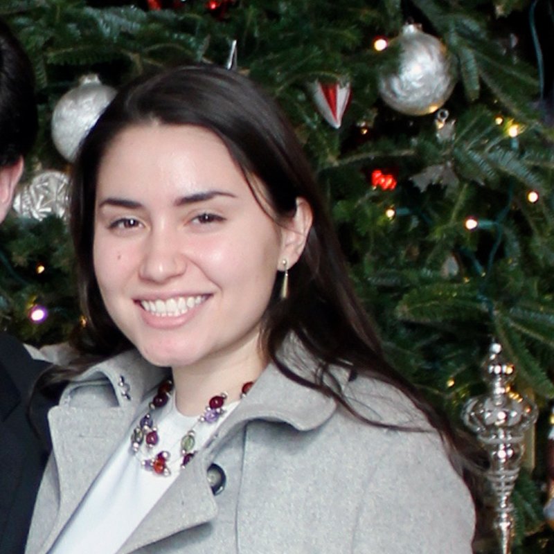

WELCOME.
Uptown Vocal is the premier jazz and pop a cappella group of Columbia University in the city of New York. As we enter our third decade of bringing jazz/pop to the CU community, our repertoire includes major pop hits like Beyonce Knowles' "Single Ladies" and Ben Folds' "Still Fighting It", as well as timeless jazz standards such as "My Funny Valentine" and "Fly Me to the Moon".
We perform at numerous functions both on and off campus throughout the year and regularly grace other college campuses with our musical talent and unusual attractiveness.
To listen to all of our songs or buy our albums, visit our bandcamp!
Members
-  Allison Heimann
 Danielle Strassman
Danielle Strassman Lizzy Karnaukh
Lizzy Karnaukh Betsey Giammatei
Betsey Giammatei Mary Glenn
Mary Glenn Jane Kim
Jane Kim Rachel Rosen
Rachel Rosen Joya Ahmad
Joya Ahmad Linda Cartolano
Linda Cartolano Reuben Arnold
Reuben Arnold Ben Kaplan
Ben Kaplan Jonathan Dean
Jonathan Dean Michael Gildin
Michael Gildin Devin Wright
Devin Wright Tareq Abuissa
Tareq Abuissa Gabe Blanco
Gabe Blanco Ray Heimann
Ray Heimann Mikhail Qader
Mikhail Qader
Media


Auditions
Uptown Vocal holds auditions every year in September, usually during the first week of fall semester. If you're at all interested in being a part of UV, all you have to do is prepare a short song for us! We're always looking for talented singers.
This year we took four new members:
- Linda Cartolano (alto) BC'16
- Betsey Giammattei (soprano) BC'16
- Lizzy Karnauhk (soprano) BC'16
- Mikhail Qader (bass) SEAS'16
Contact
With our blend of classic jazz favorites, contemporary hits, and a bit of comedy thrown in on the side, Uptown Vocal is a perfect fit for your engagement! UV has performed to acclaim at hundreds of events, from weddings and private parties, to charity events and company banquets. We've opened in concerts for big stars like Ben Folds and performed series at venues like the QE2 cruise ship. Whatever the size or scale, Uptown Vocal can make your event unforgettable.
For booking information or any other questions and requests, please contact us at uptownvocal@columbia.edu.